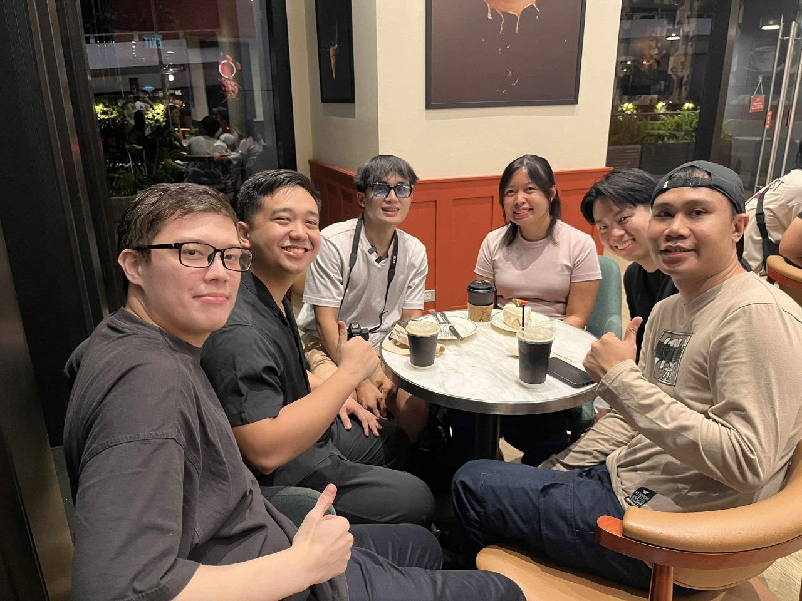

Italian for Filipinos · online and around a table
Tropamici
A low-pressure Italian space where daily chat can become a real conversation—and a real conversation can become a meetup.
The group is built for Filipino learners who want steady contact with Italian without pretending every sentence is perfect. Memes, questions, resources, and in-person moments all belong to the same practice.
